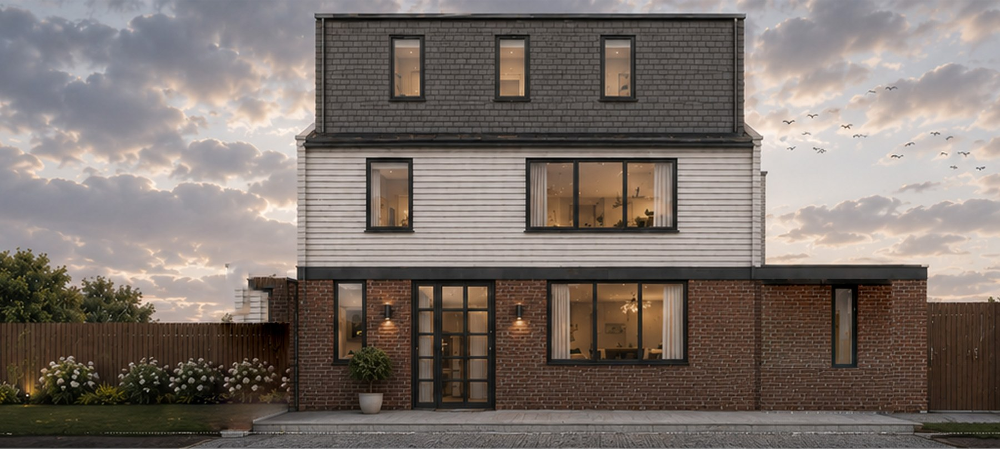

Listed building consent, explained

Listed building consent is not planning permission with extra drawings. It is a separate legal test, under the Planning (Listed Buildings and Conservation Areas) Act 1990. Works that affect the character of a listed building as a building of special architectural or historic interest need consent. Doing those works without it is a criminal offence.
When you need it
If the building is listed, assume consent until we have checked the list description, the interior, and the curtilage. Listing covers the whole building, not just the pretty elevation. Interiors, staircases, joinery, later additions, and buildings in the curtilage can all be caught.
Planning permission may also be needed for the same job — an extension almost always needs both. Listed building consent has no statutory fee. That does not make it faster. Heritage officers want evidence, not adjectives.
What officers actually look at
- Significance — what is special, and what is later or harmful already.
- The effect of the works on that significance, not on “the look” in general.
- Whether harm is justified: NPPF paragraphs on heritage assets still apply.
- Detail: junctions, mortar, window profiles, reversibility.
A Design and Access Statement that says “high quality materials” is not a Heritage Statement. We write the latter from the building, the list entry, and the local appraisal.
How we put the pack together
- Confirm grade, list entry, and whether curtilage buildings are in play.
- Record what is there — photographs, a measured survey, opening-up only where it is safe and agreed.
- Draw the works so an officer can see the existing and the proposed on the same sheet.
- Say, in writing, where we are causing harm and why the public benefit (or the building’s viable use) outweighs it. If we cannot say that honestly, we change the design.
What usually fails
uPVC in place of timber. A rear box that ignores the plan form. Stripping plaster to “expose brick” that was never meant to be seen. Applications lodged without a heritage statement on a Grade II terrace. All of these are avoidable.
If you have a listed house and a refused consent, email the notice to design@fadp.co.uk. A director will read it.
Listed buildings · Get a quote
Grade II is still listed
Most London houses that people live in and want to alter are Grade II, not I or II*. The test is the same Act. Officers still want to see the list entry, the interior, and the effect on plan form. “It’s only Grade II” is not a strategy.
Curtilage and later additions
Buildings and walls that were in the curtilage of the listed building at the date of listing can be protected even if they are not named in the description. A rear outrigger, a garden wall, a later wing — we check before we draw a demolition. If we are unsure, we ask the conservation officer in writing rather than finding out in a refusal.
Like-for-like repair
Repair in matching materials, on the same detail, often does not need consent. Replacement with a different profile, a different opening, or a different material does. The line is narrower than people hope. If you are replacing every sash because a builder priced uPVC, stop and talk to us first.
How long it takes
There is no statutory fee, and the clock is not always the householder eight weeks in practice. A clean pack on a modest Grade II terrace can run with planning. A pack that needs opening-up, mortar analysis, or a second heritage note will not. We programme that at feasibility so you are not planning a start on site against a fantasy date.